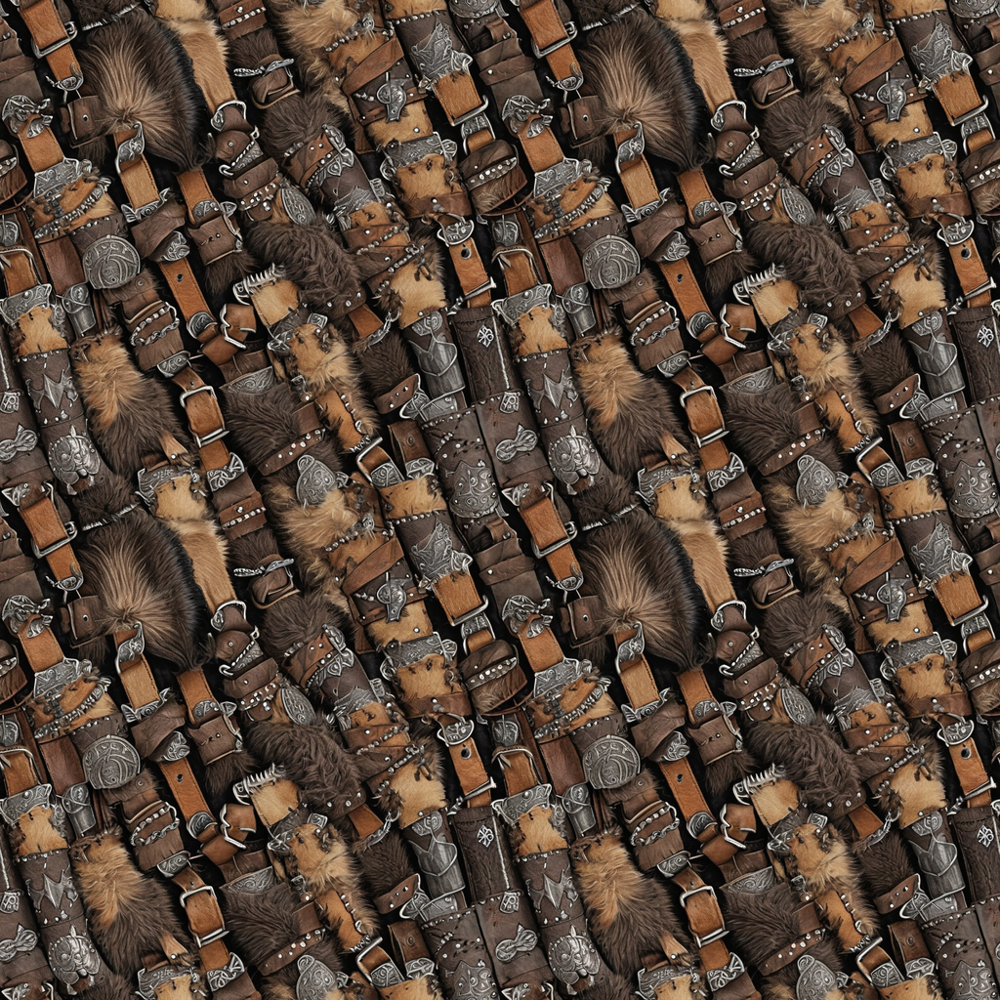
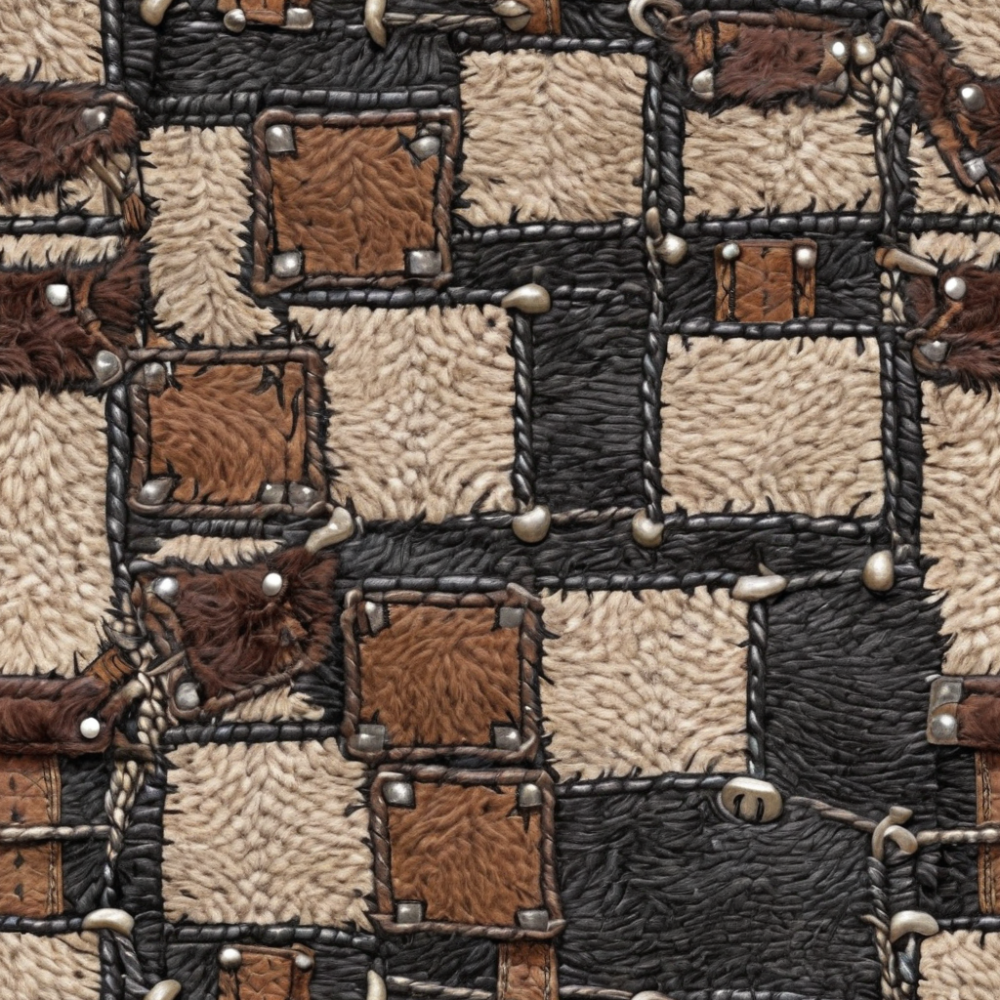
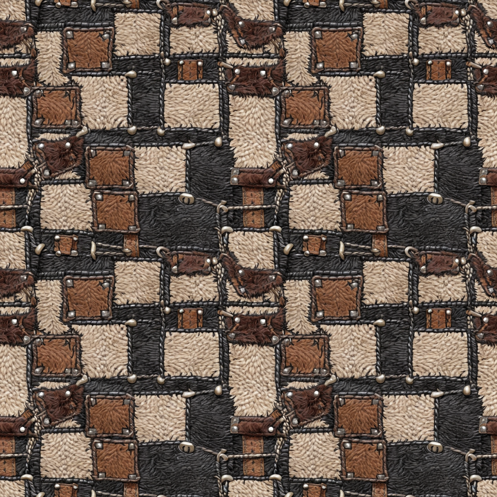
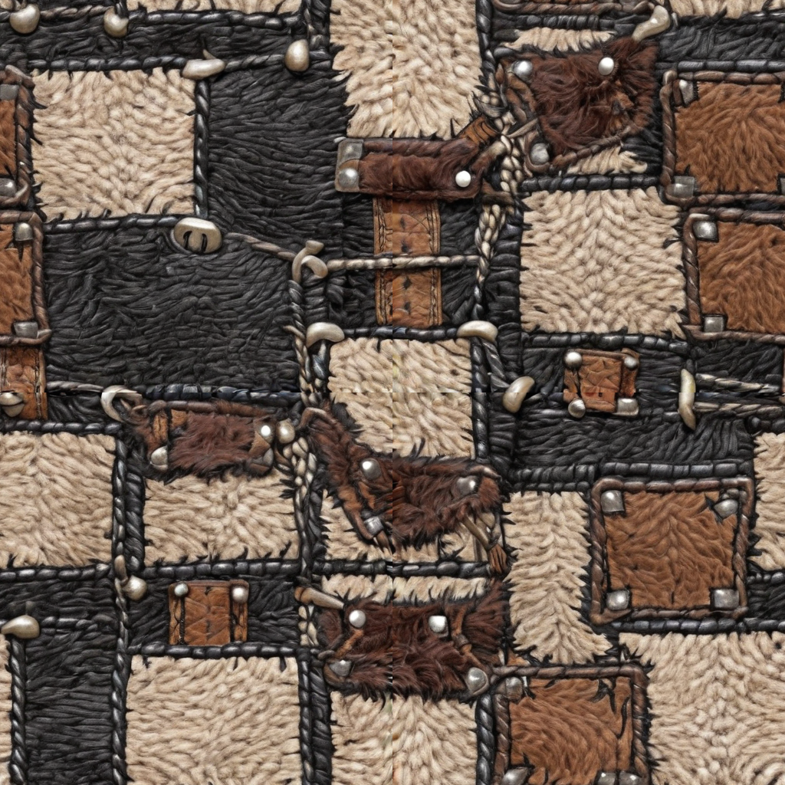
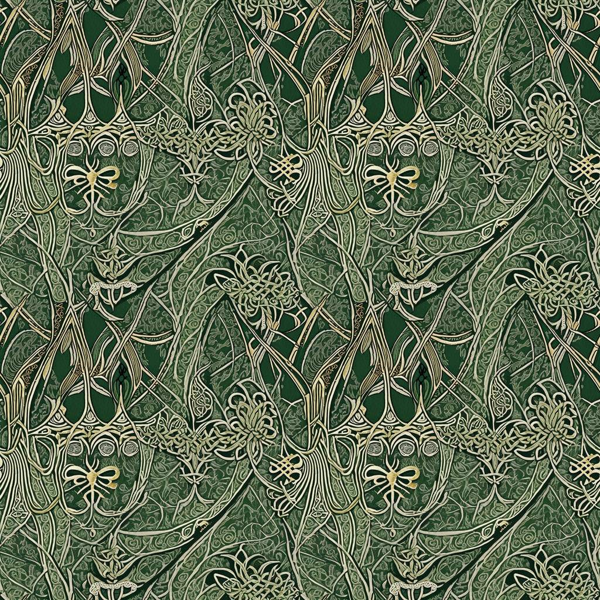
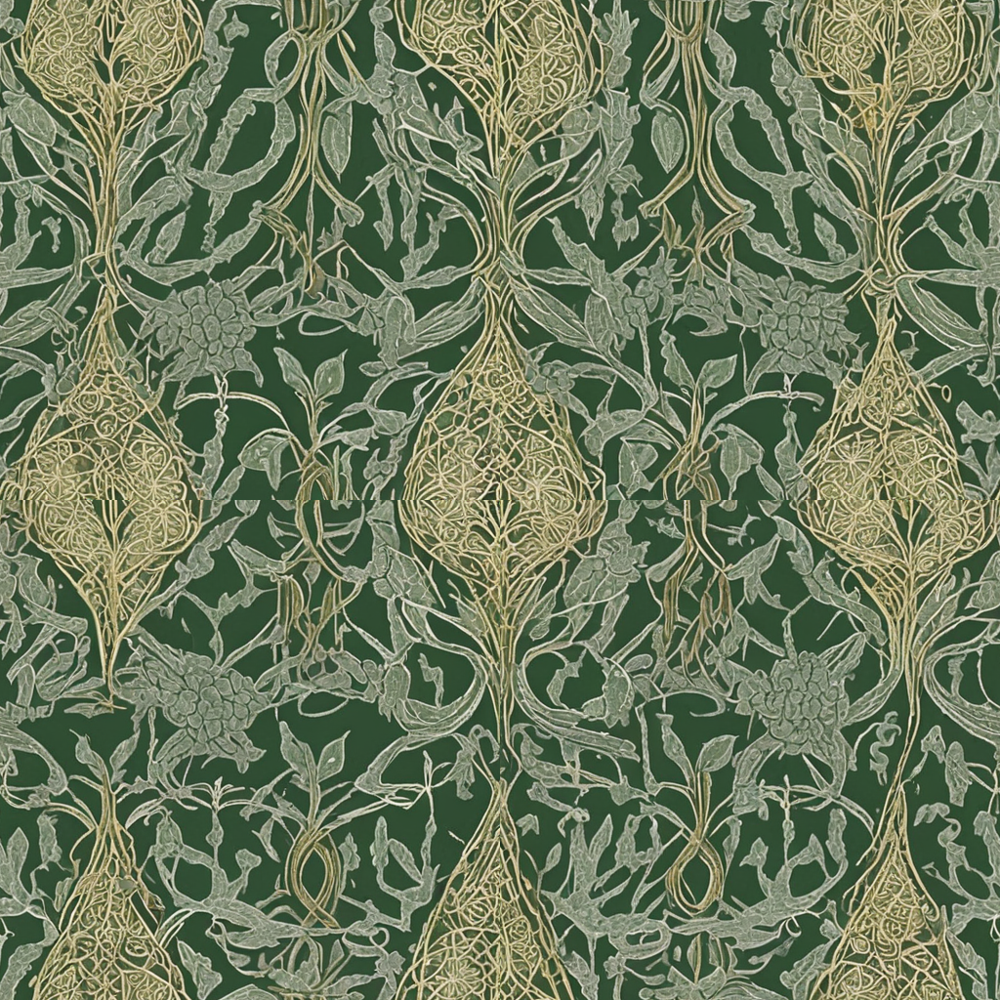
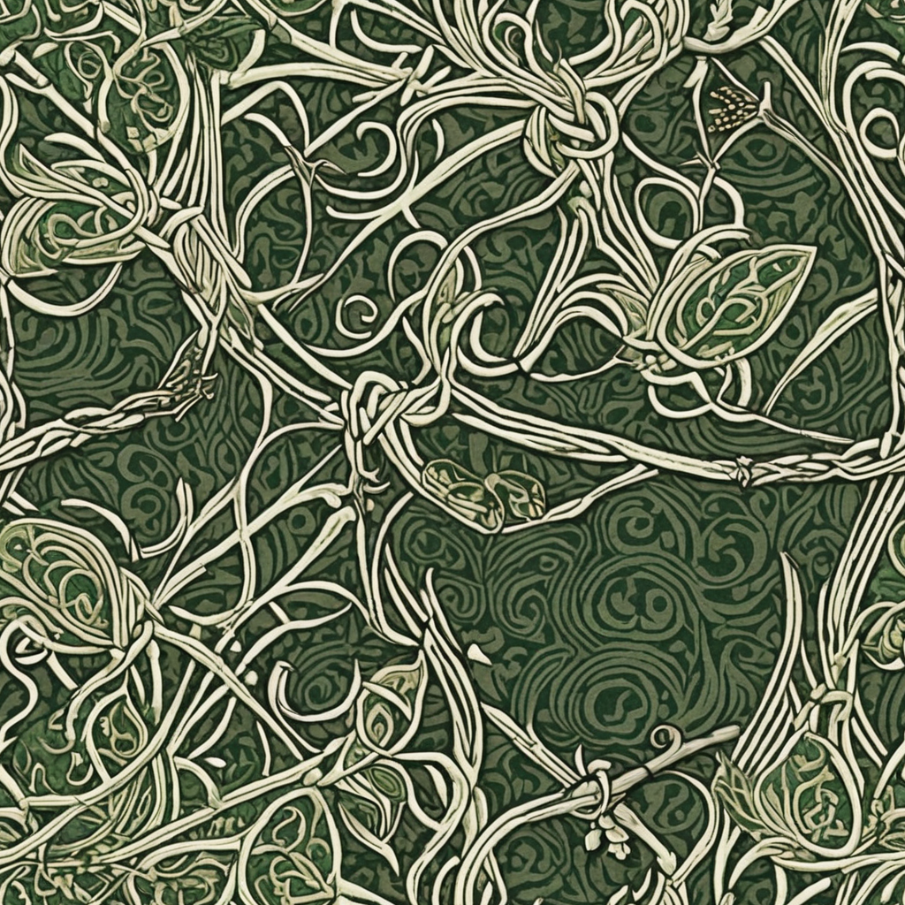
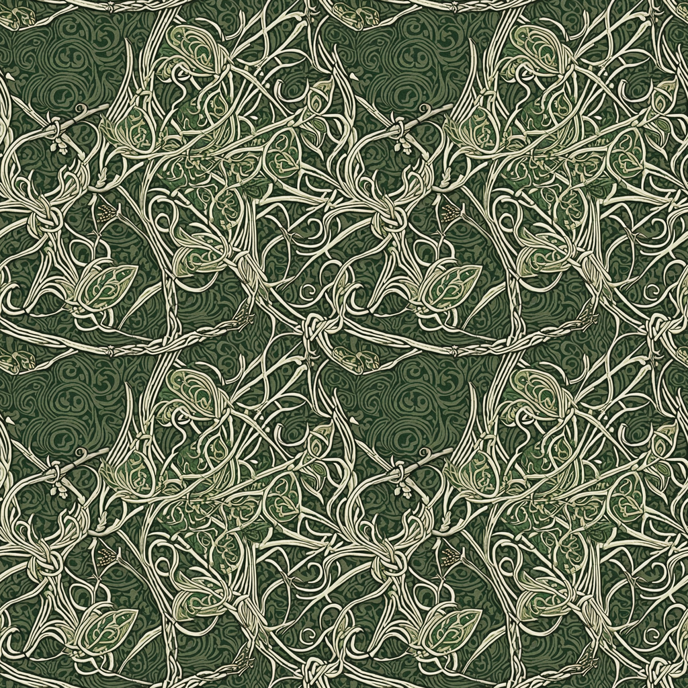
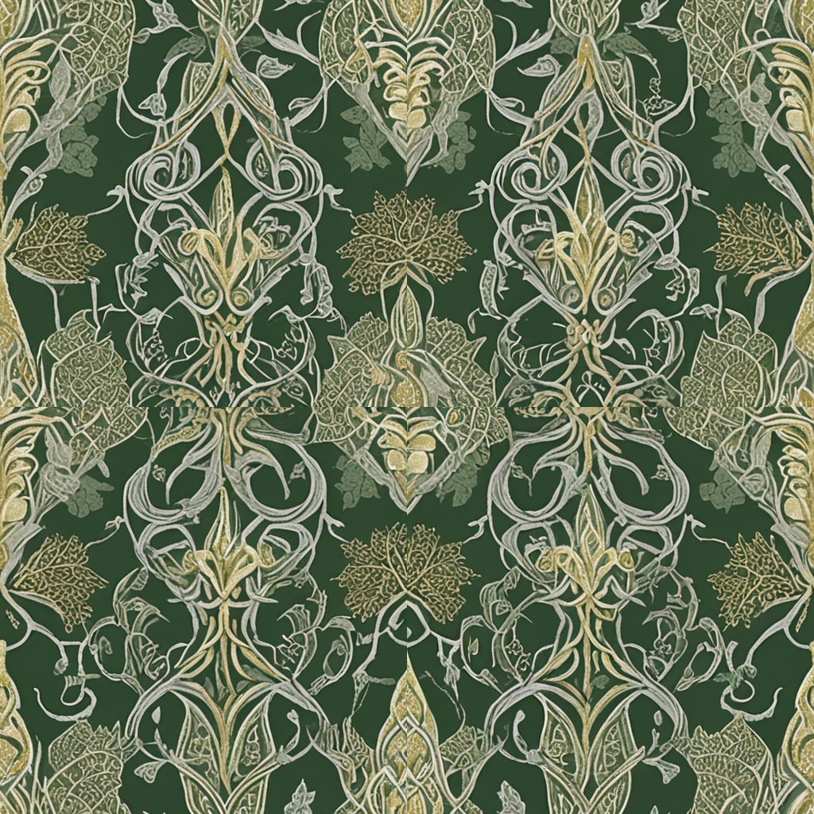

SeamlessTile model patch + CircularVAEDecode (spinagon/ComfyUI-seamless-tiling), JuggernautXL_RunDiffusionPhoto2_V9_Final.safetensors, 1024px tiles. Ratio ~1.0 = wrap edge indistinguishable from interior; control = same seed without tiling nodes.
| barbarian s101 wrap/interior ratio x=1.04 y=0.83 control x=3.09 y=3.21 | tile | half-offset | 2x2  | CONTROL offset (seam expected) |
|---|---|---|---|---|
| barbarian s202 wrap/interior ratio x=1.02 y=0.99 control x=3.77 y=3.69 | tile  | half-offset | 2x2  | CONTROL offset (seam expected)  |
| elven s101 wrap/interior ratio x=1.09 y=0.96 control x=2.78 y=3.14 | tile | half-offset | 2x2  | CONTROL offset (seam expected)  |
| elven s202 wrap/interior ratio x=1.07 y=1.09 control x=2.76 y=3.52 | tile | half-offset  | 2x2  | CONTROL offset (seam expected)  |